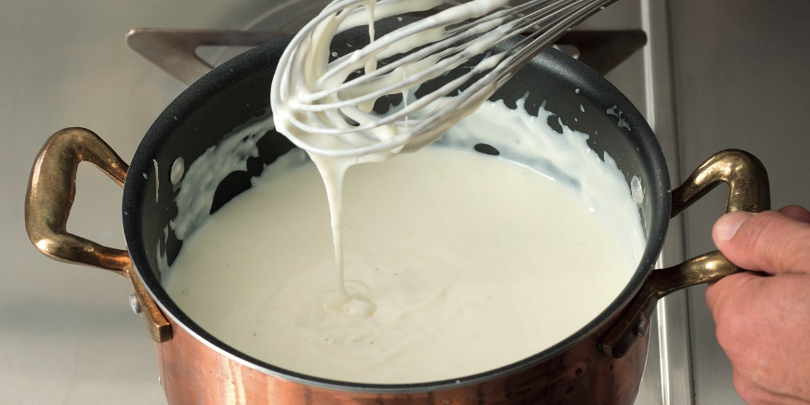

Bechamel

The bechamel is the perfect sauce for many types of pasta.
Bechamel is an ancient basic sauce claimed by both Italians and French as their own creation.
Bechamel sauce is the most versatile of cooking sauces, easy and quick to make, it will give
an extra boost to all your dishes. From lasagna to baked pasta such as pasta au gratin with
fennel and bechamel sauce, its possible uses are countless. It's also the perfect filling for
crispy, hearty monachina eggs.
Here you will discover all the secrets to obtain a creamy bechamel sauce without lumps!
Ingredients
- Butter
- Whole milk
- Nutmeg
- Flour 00
- Fine salt
Steps
- heat the milk in a saucepan
- separately, melt 100 g of butter over low heat
- then turn off the heat and add 100 g of flour all at once
- stirring with a whisk to prevent lumps from forming
- put the saucepan back over low heat and stir until golden obtaining the roux
- flavor the milk with nutmeg and salt
- pour a little hot milk on the roux to dilute the bottom
- then add the rest, whisking vigorously
- cook for 5-6 minutes till it boils
- the bechamel is ready